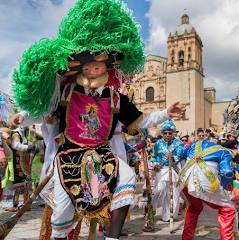

About
Oaxaca,[a] officially the Free and Sovereign State of Oaxaca, [b] is one of the 32 states that compose the Federative Entities of the United Mexican States. It is divided into 570 municipalities, of which 418 (almost three quarters) are governed by the system of usos y costumbres (customs and traditions)[8] with recognized local forms of self-governance. Its capital city is Oaxaca de Juárez.
Oaxaca is in southern Mexico.[9] It is bordered by the states of Guerrero to the west, Puebla to the northwest, Veracruz to the north, and Chiapas to the east. To the south, Oaxaca has a significant coastline on the Pacific Ocean.
The state is best known for its indigenous peoples and cultures. The most numerous and best known are the Zapotecs and the Mixtecs, but 16 are officially recognized. These cultures have survived better than most others in Mexico due to the state's rugged and isolating terrain. Most live in the Central Valleys region, which is also an economically important area for tourism, with people attracted for its archeological sites such as Monte Albán, and Mitla,[10] and its various native cultures and crafts. Another important tourist area is the coast, which has the major resort of Huatulco and sandy beaches of Puerto Escondido, Puerto Ángel, Zipolite, Bahia de Tembo, and Mazunte. [11] Oaxaca is also one of Mexico's most biologically diverse states, ranking in the top three, along with Chiapas and Veracruz, for numbers of reptiles, amphibians, mammals and plants.[12]
History
Oaxaca is a region known for its long and complex history, deeply rooted in the cultures of its indigenous peoples and the interactions with various conquering empires.
Early History
Human habitation in Oaxaca dates back to roughly 11,000 BCE, with evidence of early agriculture and the domestication of plants found in the Guilá Naquitz cave. The region was home to several indigenous cultures, with the Zapotec and Mixtec being the most prominent. The Zapotecs established a powerful civilization with Monte Albán serving as a major center from 500 BCE to 750 CE. The Mixtecs later rose to prominence and exerted influence over the region, taking control of Monte Albán in 1325.
Aztec & Spanish Arrival
The Aztecs arrived in Oaxaca around 1250 AD and established
military outposts, extending their control in the 15th
century.Following the fall of the Aztec capital, Tenochtitlan,
the Spanish arrived in Oaxaca in 1521, drawn by reports of gold.
Cortés's captains, like Gonzalo de Sandoval and Francisco de
Orozco, played a role in the Spanish conquest of the area.
The Spanish established a settlement in the Central Valley,
originally known as Guajaca, and later Antequera de Guaxaca,
now Oaxaca de Juárez. The Spanish colonization had a devastating
impact on the native population due to disease and forced labor.
Colonial Period & Independence
During the colonial era, Oaxaca prospered from the export of cochineal dye and textiles. Oaxaca remained loyal to the Spanish Crown during the initial stages of the Mexican War of Independence. However, insurgent forces gained ground, and the state played a role in the independence struggle, finally becoming a state in 1824.
19th and 20th Centuries
- Mexican Independence: Oaxaca became a state in the newly independent Mexican Republic in 1824.
- Benito Juárez: Benito Juárez, a Zapotec from Oaxaca, became a pivotal figure in Mexican history, serving as president multiple times in the latter half of the 19th century and advocating for liberal reforms.
- Porfirio Díaz: Another Oaxacan, Porfirio Díaz, dominated Mexican politics for decades as president in the late 19th and early 20th centuries.
- Mexican Revolution: Oaxaca, like other southern states, participated in the Mexican Revolution, with many supporting Emiliano Zapata's fight for land reform.
- Modern Era: The 20th and 21st centuries have seen continued social and political changes in Oaxaca, with the Institutional Revolutionary Party (PRI) dominating the political scene for much of this period, facing challenges from various social and political movements.
Oaxaca Today
Oaxaca remains one of Mexico's most ethnically diverse
states, with a significant indigenous population that
continues to preserve its distinct languages and traditions.
Oaxaca is now a popular tourist destination, attracting
visitors with its rich history, archaeological sites (like
Monte Albán), beaches, and vibrant cultural scene, including
renowned indigenous arts and crafts
Geography
- Mountainous Terrain: Three major mountain ranges dominate the landscape, contributing to the state's ruggedness.
- Diverse Regions: Oaxaca features valleys like the fertile Central Valleys, the narrow Isthmus of Tehuantepec, and a coastal plain.
- Varied Climate: The climate varies based on altitude, with distinct regions ranging from hot and subtropical to temperate.
- High Biodiversity: The state's diverse geography supports a wide variety of plant and animal life. Oaxaca's history and geography are intertwined, shaping its unique cultural heritage and stunning landscapes.
Culture
Oaxaca is known for its vibrant and diverse culture, deeply rooted in its indigenous heritage, particularly from the Zapotec and Mixtec people. This mountainous region is home to a multitude of indigenous communities, each with unique languages, customs, and traditions that have been preserved due to the region's rugged terrain. Oaxaca's culture is prominently expressed through its world-renowned cuisine, featuring iconic dishes like the various "moles" and tlayudas. The lively atmosphere of its markets and festivals like the Guelaguetza showcase the region's rich traditions, colorful art, and the warmth and hospitality of its people. Oaxaca is also renowned for its skilled artisans who create intricate pottery, textiles, and colorful wooden sculptures known as alebrijes.
Climate
Located in southern Mexico, features a diverse climate. While it generally has a tropical savanna climate, categorized as Aw under the Köppen climate classification, its varied topography influences local weather patterns. The coastal areas experience warm temperatures and high humidity year-round. Inland areas, like Oaxaca City, have a more temperate climate with distinct wet and dry seasons. The rainy season typically runs from May to October, with afternoon showers and occasional thunderstorms being common. The dry season, from October to April, offers sunny days, low humidity, and cooler nights, making it a popular time to visit. Overall, Oaxaca provides a pleasant climate with consistent warmth, but visitors should be prepared for regional variations, especially considering the higher elevations which can be significantly cooler.
Toursim
Oaxaca's tourism scene today is experiencing significant growth, fueled by its unique blend of ancient indigenous culture and colonial charm, coupled with a focus on sustainable and authentic experiences. The city and surrounding areas are popular for their historical sites like Monte Albán and Mitla, vibrant markets, incredible food, and renowned mezcal production. However, this tourism boom also presents challenges, including rising housing prices and gentrification, which have led to tensions with the local population. Despite these issues, Oaxaca continues to attract a diverse range of visitors, including both domestic and international travelers, drawn to its cultural richness and immersive experiences.